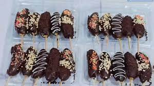

es kul-kul
Es kul-kul merupakan makanan manis beku modern yang muncul pada tahun 2000an yang terdiri dari roti, buah, eskrim dan segala bahan lain yang ditusuk, lalu disalut atau diglasir kemudian dikeraskan dan dibekukan. Glasir yang paling umum adalah coklat dan glasir berperisa buah.
